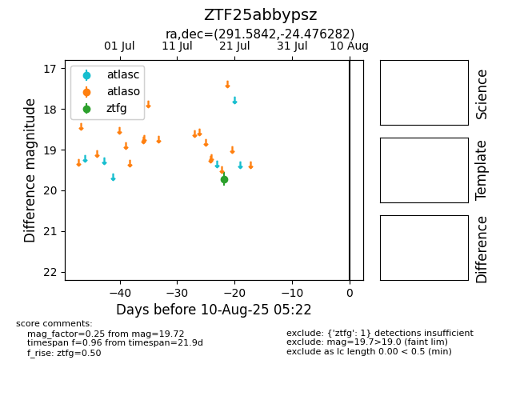

Target ZTF25abbypsz at 2025-08-10 05:22, see:
FINK: fink-portal.org/ZTF25abbypsz
Lasair: lasair-ztf.lsst.ac.uk/objects/ZTF25abbypsz
ALeRCE: alerce.online/object/ZTF25abbypsz
alt names
ZTF25abbypsz (ztf,fink)
coordinates:
equatorial (ra, dec) = (291.5842,-24.47628)
galactic (l, b) = (14.1584,-18.16713)
photometry
last ztfg=19.72
1 ztfg detections
